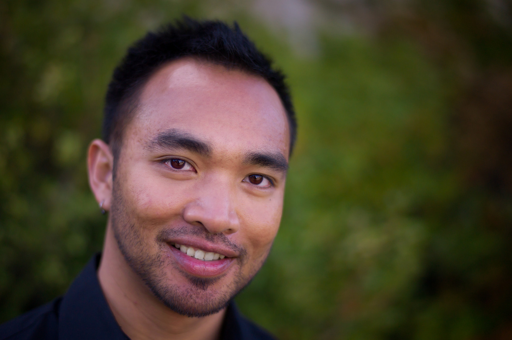

About Me
I was born on June 27, 1979 in Santa Cruz, California. I am the youngest of nine children. I am part Filipino, Chinese, and Japanese. I currently live in San Leandro, CA. I have two cats named Leeza (a calico cat) and Doobs (or Ruby, a black domestic cat). In addition, I live in a house with four other cats and two dogs!
I have a Bachelor's degree in Electronics Engineering. I have worked for a little over 20 years, mostly, in the tech industry. I worked at Intel for ten years and recently, at Lawrence Livermore National Lab for three years.
I enjoy performing in the theatre arts, mostly, singing, as a hobby. When I am at home, I love cleaning, washing dishes, doing laundry and folding clothes.